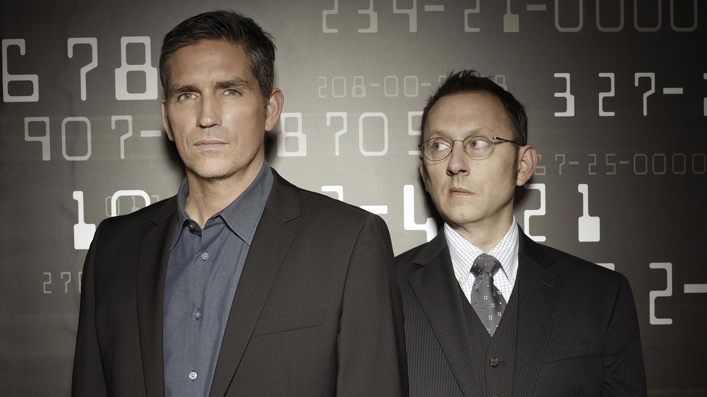

|  |
About Michael EmersonEmerson(fotoğrafta sağdaki kişi), Cedar Rapids, Iowa'da Carol (anne Hansen) ve Ronald H. Emerson'ın çocuğu olarak dünyaya geldi. Lise bandosunun bir üyesi olduğu Iowa, Toledo'da büyüdü. 1976'da Des Moines, Iowa'daki Drake Üniversitesi'nden mezun oldu ve burada tiyatro ve sanat dallarında yandal yaptı. Eugene O'Neill Tiyatro Merkezi'ndeki Ulusal Tiyatro Enstitüsü'nde bir sömestr okudu, ardından New York'a taşındı. Oyunculuk işi bulamayınca perakende işleri aldı ve illüstratör olarak çalıştı. 1986'da Jacksonville, Florida'ya taşındı ve burada (1986-93 arasında) Theatre Jacksonville ve The Players by the Sea'de yerel yapımlarda yer aldı ve Flagler College'da yönetmen ve öğretmen olarak çalıştı. İllüstrasyon ve öğretmenlik de dahil olmak üzere birkaç yıl çalıştıktan sonra Emerson, Alabama Üniversitesi'nde Alabama Shakespeare Festivali oyunculuk programında Güzel Sanatlar Yüksek Lisans derecesi aldı. Emerson, 1997'de Moises Kaufman'ın eleştirmenlerce beğenilen Broadway dışı oyunu Gross Indecency: The Three Trials of Oscar Wilde'da Oscar Wilde olarak başrol oynadı ve ardından birkaç başka önemli sahne performansı izledi. 1998'de Uma Thurman'la birlikte Broadway dışı Le Misanthrope yapımında oynadı. 1999'da The Iceman Cometh'de Willie Oban'ı canlandırdı. Give Me Your Answer, Do! ve Hedda Gabler filminde Kate Burton ile başrolü paylaştı. Emerson, Lost'un eski üyesi ve arkadaşı Terry O'Quinn ile J. J. Abrams'ın geçici olarak Odd Jobs adlı komedi-dramasında yeniden bir araya gelecekti. 2010 yılı sonunda çekime başlaması bekleniyordu, ancak gösterinin daha fazla geliştirilmesi ertelendi. 31 Temmuz 2010'da Emerson ve Preston A.R. Gurney'in Aşk Mektuplarını okudu 1990 finalisti olan Pulitzer Drama Ödülü için, Charleston Sahnesinde tiyatro için bağış toplayıcı olarak. Emerson, Eylül 2011'de CBS'de çıkış yapan başka bir Abrams dizisi olan Person of Interest'in kadrosuna katıldı. New York'ta suçla savaşmak için sözde ölü bir CIA ajanıyla ekip oluşturan bir milyarderi oynadı. |